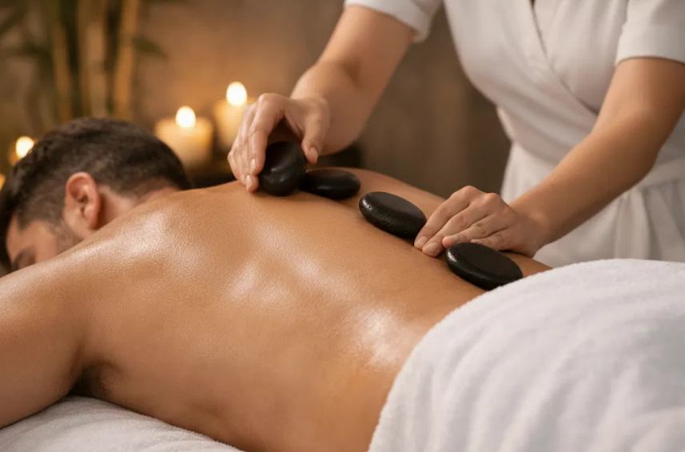

Hot Stone Massage
Hot Stone Massage in Houston TX
Our hot stone massage in Houston TX is a deeply relaxing treatment designed to help relieve muscle tension and promote full-body relaxation. During this therapy, smooth heated stones are placed on key areas of the body while the therapist performs gentle massage techniques.
The warmth of the stones helps muscles relax more quickly, allowing the therapist to work deeper into tight areas without causing discomfort. This treatment is especially helpful for people who experience chronic stress, muscle stiffness, or fatigue caused by long hours of work.
Many clients searching for hot stone massage near me Houston visit Houston Foot Health Center to enjoy the calming benefits of this popular spa treatment. The combination of soothing heat and therapeutic massage helps improve circulation while creating a deeply relaxing experience.
Our goal is to provide a comfortable and peaceful environment where clients can enjoy a rejuvenating spa massage in Houston TX.